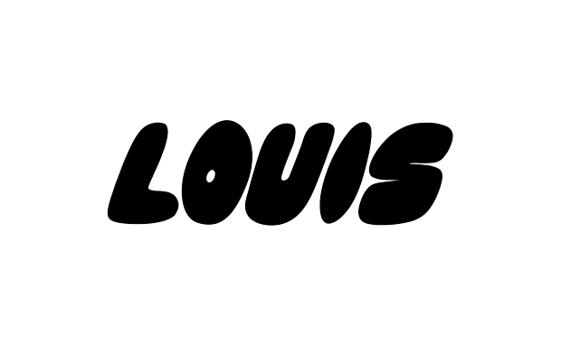
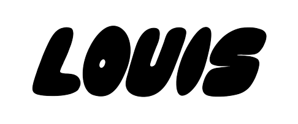
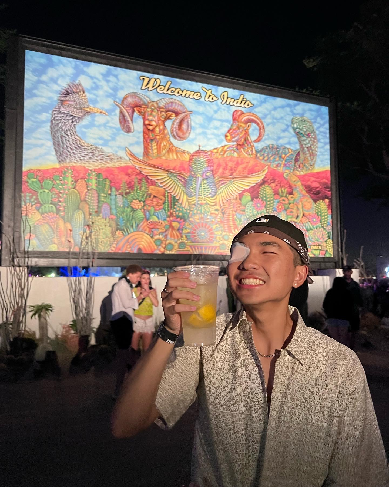
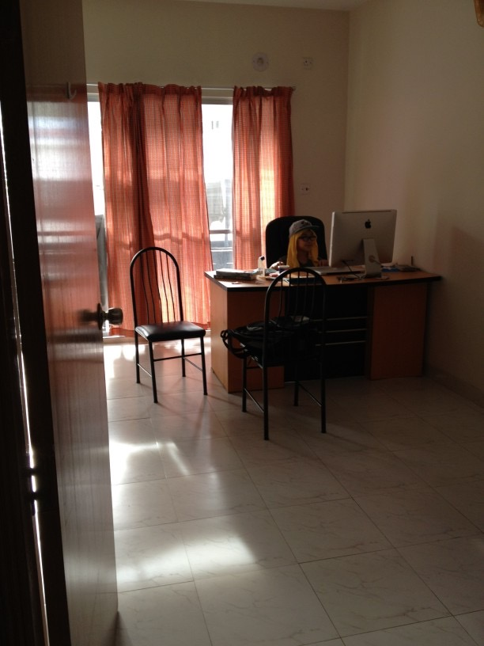
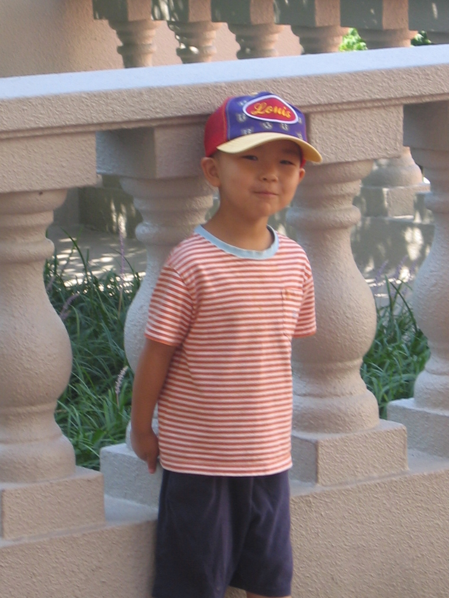
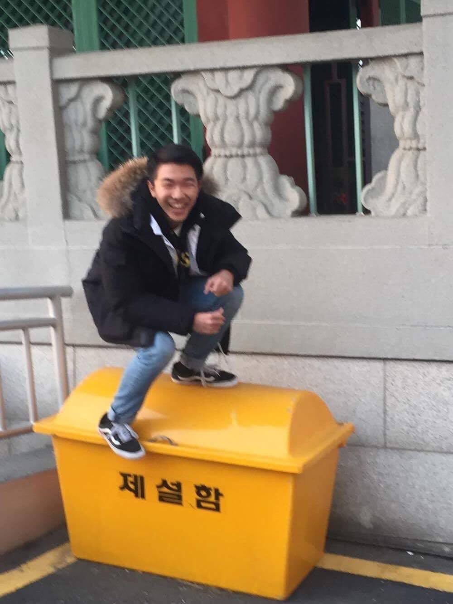
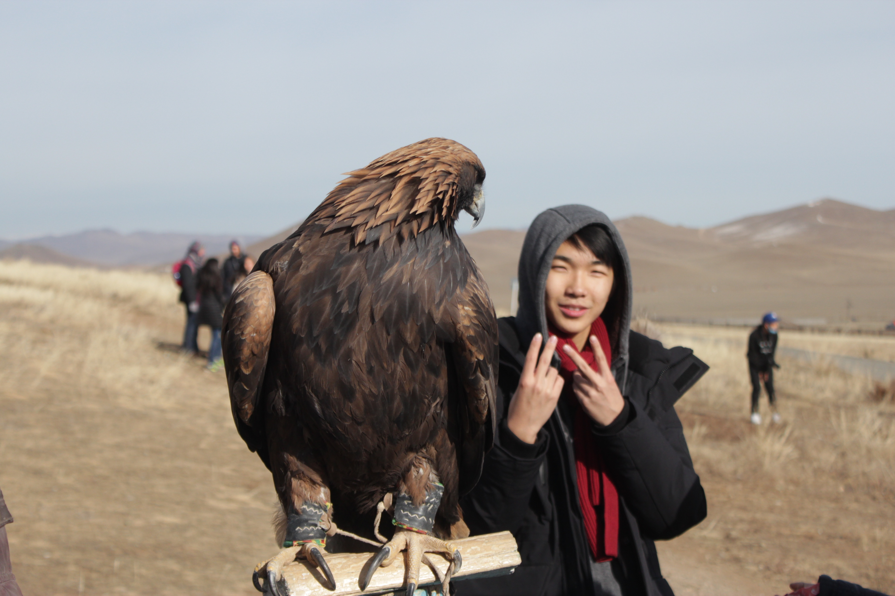

<!DOCTYPE html>
<html>
    <head>
        <title>Louis Ro</title>
        <meta name=”viewport” content=”width=device-width, initial-scale=1.0">
        <link rel="stylesheet" href="styles.css">
        <link rel="stylesheet" type="text/css" href="fullpage/fullpage.css" />
        <link rel="stylesheet" href="font-awesome/css/font-awesome.css"
        <link rel="preconnect" href="https://fonts.googleapis.com">
        <link rel="preconnect" href="https://fonts.gstatic.com" crossorigin>
        <link href="https://fonts.googleapis.com/css2?family=Mulish:wght@600&display=swap" rel="stylesheet">
        <link rel="preconnect" href="https://fonts.googleapis.com">
        <link rel="preconnect" href="https://fonts.gstatic.com" crossorigin>
        <link href="https://fonts.googleapis.com/css2?family=Roboto:ital,wght@0,400;0,700;1,700&display=swap" rel="stylesheet">
    </head>

</html>
<body>

<div id="fullpage">
    <div class="section active" id="sectionOne">
        <a class="anchors" href="#home"></a>
        <h3>Student @ USC studying Communication + Web Development</h3>
        <h2><a class="anchors" href="#work">WORK</a></h2>
        <h2><a class="anchors" href="#projects">PROJECTS</a></h2>
        <h2><a class="anchors" href="#about">ABOUT</a></h2>
        <h2><a class="anchors" href="https://drive.google.com/file/d/1goJixh_IPFspg4RycDN5l_UD68MMuq1Q/view?usp=sharing" target="_blank">RESUME</a></h2>
        <div class="social-icons"><li><a class="linkedin" href="https://www.linkedin.com/in/louisro" target="_blank"><i class="fa fa-linkedin"></i></a></li></div>
    </div>

    <div class="section" id="sectionTwo">
        <h1 class="sectionTitle" data-anchor="work">WORK</h1>
        <h3 data-modal-target="#modal" class="title">ITP 104 Web Publishing (HTML/CSS/JS)</h3>
        <div class="modal" id="modal">
            <div class="modal-header">
                <div class="headerText">ITP 104 Web Publishing (HTML/CSS/JS)</div>
                <button data-close-button class="close-button">&times;</button>
            </div>
            <div class="modal-body">
                <p class="beproud">Position: Learner's Assistant</p>
                <p><ul>
                    <li>guiding 8 students through 1-1 tutoring and mini-lessons on how they can improve their code</li>
                    <li>collaborating with 6 other LAs to curate study guides and quizzes that can help students further develop their web development skills</li>
                </ul></p>
                <p>Took my first ever Web Development course in Spring 2022, where I got to learn the ins and outs of HTML and 
                    CSS with a little bit of Javascript. Out of all the courses I've ever taken in my college career, this class
                    was my forever favorite. I'm also taking a course right now to learn Javascript 
                    on a deeper level (React, etc.)!</p>
            </div>
            </div>
            <div id="overlay"></div>
        
        <h3 data-modal-target="#modal2" class="title">Peppermint</h3>
        <div class="modal" id="modal2">
            <div class="modal-header">
                <div class="headerText">Peppermint</div>
                <button data-close-button class="close-button">&times;</button>
            </div>
            <div class="modal-body">
                <p class="beproud">Position: Product Insights Intern</p>
                <p>Technology used: Google Analytics, Hotjar, Figma, Tiktok Ads, Meta Ads</p>
                <p><ul>
                    <li>ideated and developed mockups on Figma for startup websites on sustainability, fabric&materials, and DEI initiatives</li>
                    <li>established marketing strategy that directly targets Gen-Z through content creation and advertising
                        specifically on Tiktok and Facebook/Instagram.</li>
                </ul></p>
                <p>I led the marketing analytics for VC-backed undergarments startup that revolutionizes the idea of underwear.
                    I was able to learn more about marketing and product development for a new product that was just launched 2 months in prior
                    to my involvement. I got to work with Google Analytics and Hotjar to learn more of the UX research side of operations,
                    and got to lead initiatives on essential user features along with customer insights reviews!</p>
            </div>
            </div>
            <div id="overlay"></div>

        <h3 data-modal-target="#modal3" class="title">Shift SC</h3>
        <div class="modal" id="modal3">
            <div class="modal-header">
                <div class="headerText">Shift SC</div>
                <button data-close-button class="close-button">&times;</button>
            </div>
            <div class="modal-body">
                <p class="beproud">Position: Graphic Designer</p>
                <p>Technology used: Figma, Adobe Illustrator, Slack, Notion</p>
                <p><ul>
                    <li>created over 25+ visual marketing materials, to ultimately establish visual and brand identity for organization</li>
                    <li>worked with designers and marketing managers to advertise informative content on socially-responsible, human-centered technology</li>
                </ul></p>
                <p>I was part of the first cohort for a new student organization focused on socially-responsible, human-centered tech. Our main event
                    was a Tech4Good conference, where 300+ attendees and 10+ speakers gathered to learn more about the current state of technology and
                    social media. All projects were worked on cross-functionally with design team and marketing team.</p>
            </div>
            </div>
            <a href="#home"></a>
            <div id="overlay"></div>
    </div>

    <div class="section" id="sectionThree">
        <h1 class="sectionTitle" data-anchor="projects">PROJECTS</h1>
        <h3 data-modal-target="#modal4" class="title">Creative Labs SC</h3>
        <div class="modal" id="modal4">
            <div class="modal-header">
                <div class="headerText">Creative Labs SC</div>
                <button data-close-button class="close-button">&times;</button>
            </div>
            <div class="modal-body">
                <p class="beproud">Position: Co-Founder/President</p>
                <p><ul>
                    <li>led project from ideation to execution with Co-Founder Sarah Woo. established marketing strategy and program structure</li>
                    <li>achieved 250+ Instagram followers and 1,000+ website click-through rate purely through guerilla marketing</li>
                    <li>worked with Tech Director to design and code website using Figma and Webflow, with continuous monitoring on what essential features
                        may be needed for first-time visitors who want to learn more about the organization.
                    </li>
                </ul></p>
                <p>Sarah and I loved how creative USC students can be, and how they actually embrace the concept of "possibilities are endless".
                    However, while students had these ideas, they were never able to execute and showcase it to their community because 1. They lacked the resources;
                    2. They don't have a space or opportunity on campus for these events as they can be deemed "unnecessary"; 3. The concept of creativity being explored 
                    was heavily restricted to Art/Design majors on campus. Many who do not study art or design expressed their desire to work on projects outside of their classroom
                    where they can treat it as a creative outlet while working towards a meaningful cause. Hence, Creative Labs SC was founded. We are USC's first-ever creative
                    project-based organization where we provide a space and opportunity for student creatives to pursue whatever passion project they desire. They redefine what creativity
                    is on the USC campus. Also, our mascot is an otter!
                </p>
            </div>
            </div>
            <a href="#home"></a>
            <div id="overlay2"></div>

        <h3 data-modal-target="#modal5" class="title">Can you beat Javascript in a game?</h3>
        <div class="modal" id="modal5">
            <div class="modal-header">
                <div class="headerText">Can you beat Javascript in a game?</div>
                <button data-close-button class="close-button">&times;</button>
            </div>
            <div class="modal-body">
                <p class="beproud">Position: Developer</p>
                <p>
                    <button><a href="https://louissro.github.io/javascriptgamefun/" target="_blank">Play now!</a></button>
                </p>
                <p>I've played games my whole life, and the fact that I got the chance to code my own game was pretty fun. I used HTML/CSS and 
                    Javascript to build this; although it looks simple, I'm pretty proud! There's a scoreboard too!
                </p>
                <video width="500" height="300" controls><source src="img/javascriptGame.mov" type="video/mp4"></video>
            </div>
            </div>
            <div id="overlay2"></div>

        <h3 class="title"><a href="trade.html" target="_blank" class="title">Trade n' Exchange</a></h3>
           


    </div>


    <div class="section" id="sectionFour">
        <h1 class="sectionTitle" data-anchor="about">ABOUT</h1>
        <div class="caption">
            <div class="column" id="me">
                
            </div>
            <div class="column" id="columnAbout">
                <div class="text">
                <h3>Fight on! ✌️</h3>
                <p>Nice to meet you!</p>
                <p>I'm currently a senior at USC studying Communication, 
                    with a minor in Web Technologies and Applications (Web Development), 
                    graduating in the year 2023.</p>
                <p>I love to create both physically and mentally; it gives me joy to see the end-product of 
                    everyone's hard work and accomplishments. My journey into Communication and Web Dev have 
                    been a lot of ups and downs, with constant change in career ambitions. However, I've come 
                    to the realization that what I enjoy the most is 
                    figuring out ways to better connect people with products in meaningful ways.</p>
                <p>This stems from my life story of moving around 13 times around the world, between countries like Bangladesh and China. 
                    I had the fortunate opportunity to gain life experiences such as being exposed to different cultures and 
                    backgrounds, which helped me adopt an open-minded outlook.</p>
                </div>
            </div>
            <a href="#home"></a>
            <div class="clearfloat"></div>

        <div id="live">
            <h1>the countries i've visited:</h1>
                <div class="columnImg">
                    
                    <h4>Bangladesh</h4>
                    <p>one of the countries I've had so much fun in</p>
                </div>
                <div class="columnImg">
                    
                    <h4>China</h4>
                    <p>wishing I continued practicing Mandarin</p>
                </div>
                <div class="columnImg">
                    
                    <h4>South Korea</h4>
                    <p>where I grew up the most</p>
                </div>
                <div class="columnImg">
                    
                    <h4>Mongolia</h4>
                    <p>where I got to learn the importance of community and family</p>
                </div>
            </div>
        </div>

        <hr>
        


        <!-- <footer class=”container mt-4">
            <div class=”row”>
            <div class=”col”>
            <p class=”text-center”>Design by <a href=”#”>Aliens</a></p>
            </div>
            </div>
           </footer> -->

    <footer class="site-footer">
        <div class="container">
          <div class="row">
            <div class="col-md-8 col-sm-6 col-xs-12">
              <p class="copyright-text">Copyright &copy; 2022 Louis Ro. All Rights Reserved.
              </p>
            </div>
  
            <div class="col-md-4 col-sm-6 col-xs-12">
              <ul class="social-icons">
                <li><a class="envelope" href="mailto:lro@usc.edu" target="_blank"><i class="fa fa-envelope"></i></a></li>
                <li><a class="linkedin" href="https://www.linkedin.com/in/louisro" target="_blank"><i class="fa fa-linkedin"></i></a></li>   
              </ul>
            </div>
          </div>
        </div>
  </footer>

        </div>
    </div>

</div>


    <script type="text/javascript" src="fullpage/fullpage.js"></script>"
    <script type="text/javascript">
        var myFullPage = new fullpage('#fullpage', {
            anchors:['home', 'work', 'projects', 'about']
                });

        
    </script>
    <script>
        
        // var titles = document.querySelectorAll('.title');

        // for (var i=0; i<titles.length; i++) {
        //     titles[i].onclick = function() {
        //         var display = getComputedStyle(this.nextElementSibling).getPropertyValue('display');

        //         if (display == 'block') {
        //             this.nextElementSibling.style.display = 'none';
        //         } else {
        //             this.nextElementSibling.style.display = 'block';
        //         }

                
        //     }
        // }

        // const titles = document.querySelector('.title');
        // const close_btn = document.querySelector('.close-btn');
        // const popup = document.querySelector('.popup');
        // const main_popup = document.querySelector('.main-popup');

        // titles.addEventListener('click', () => {
        //     popup.style.display = "flex";
        //     main_popup.style.cssText = 'animation:slide-in .5s ease; animation-fill-mode: forwards;';
        // });

        // close_btn.addEventListener('click', () => {
        //     main_popup.style.cssText = 'animation:slide-out .5s ease; animation-fill-mode: forwards;';
        //     setTimeout (() => {
        //         popup.style.display = 'none';
        //     }, 500);
        // });

        // window.addEventListener('click', (e) => {
        //    if (e.target == document.querySelector('.popup-overlay')) {
        //     main_popup.style.cssText = 'animation:slide-out .5s ease; animation-fill-mode: forwards;';
        //     setTimeout (() => {
        //         popup.style.display = 'none';
        //     }, 500);
        //    }
        // })

        const openModalButtons = document.querySelectorAll('[data-modal-target]');
        const closeModalButtons = document.querySelectorAll('[data-close-button]')
        const overlay = document.getElementById('overlay');
        const body = document.getElementById('body');

        openModalButtons.forEach(button => {
            button.addEventListener('click', () => {
                const modal = document.querySelector(button.dataset.modalTarget)
                openModal(modal)
            })
        })

        overlay.addEventListener('click', () => {
            const modals = document.querySelectorAll('.modal.active')
            modals.forEach(modal => {
                closeModal(modal)
            })
        })

        closeModalButtons.forEach(button => {
            button.addEventListener('click', () => {
                const modal = button.closest('.modal')
                closeModal(modal)
            })
        })

        function openModal(modal) {
            if (modal == null) return
            modal.classList.add('active')
            overlay.classList.add('active')
        }

        function closeModal(modal) {
            if (modal == null) return
            modal.classList.remove('active')
            overlay.classList.remove('active')
        }

        let mybutton = document.getElementById('myBtn');
        window.onscroll = function() {scrollFunction()};
        function scrollFunction() {
            if (document.body.scrollTop > 10 || document.documentElement.scrollTop > 10) {
                mybutton.style.display = "block";
            } else {
                mybutton.style.display = "none";
            }
        }

        function topFunction() {
            document.body.scrollTop = 0;
            document.documentElement.scrollTop = 0;
        }


        


    </script>
</body>